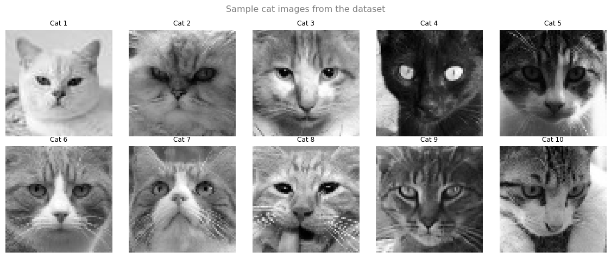
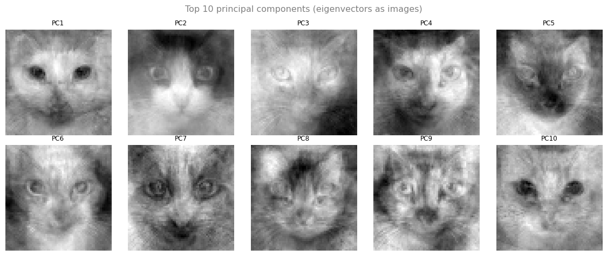
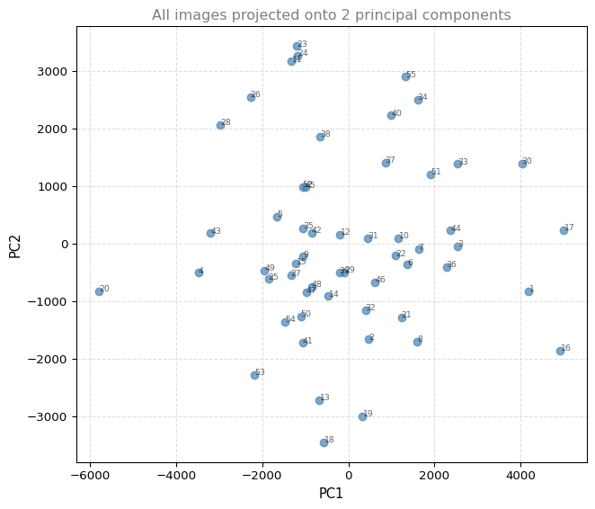
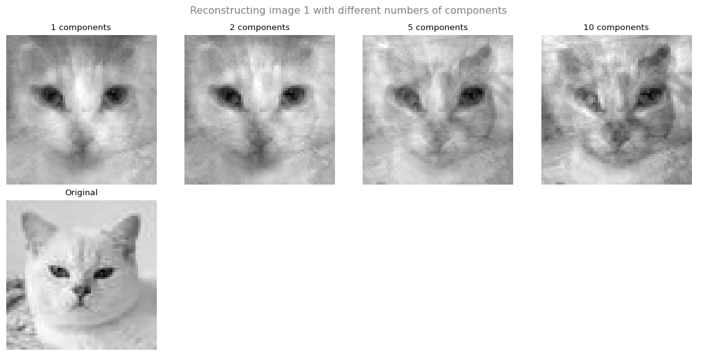

import numpy as np
import matplotlib.pyplot as plt
%config InlineBackend.figure_formats = ['png']
np.random.seed(42)Lab: Eigenvalues in Action (Webpage Navigation and PCA)
linear-algebra
In this lab you will apply eigenvalues and eigenvectors to two real-world problems: modeling how users navigate between webpages (Markov chains), and reducing the dimensionality of image data using PCA.
Setup
Part 2: PCA on Image Data
Now let’s apply PCA to reduce the dimensionality of image data. We’ll work with 55 grayscale cat photos (64×64 pixels each).
Load the Images
from PIL import Image
import os
# Load cat images, convert to grayscale, resize to 64x64
img_dir = '../../media/cats/'
img_size = 64
filenames = sorted([f for f in os.listdir(img_dir) if f.endswith('.jpg')],
key=lambda x: int(x.split('(')[1].split(')')[0]))
imgs = []
for fname in filenames:
img = Image.open(os.path.join(img_dir, fname)).convert('L').resize((img_size, img_size))
imgs.append(np.array(img))
imgs = np.array(imgs)
print(f"Dataset: {imgs.shape[0]} images, each {imgs.shape[1]}×{imgs.shape[2]} pixels")Dataset: 55 images, each 64×64 pixels# Display a few sample images
fig, axes = plt.subplots(2, 5, figsize=(12, 5))
for i, ax in enumerate(axes.flat):
ax.imshow(imgs[i], cmap='gray')
ax.set_title(f'Cat {i+1}', fontsize=9)
ax.axis('off')
plt.suptitle('Sample cat images from the dataset', fontsize=12, color='gray')
plt.tight_layout()
plt.show()
Step 1: Flatten the Images
Each 64×64 image becomes a single row vector of length 4096:
n_images = imgs.shape[0]
imgs_flatten = imgs.reshape(n_images, -1).astype(float)
print(f"Flattened shape: {imgs_flatten.shape}")
print(f"Each image is now a vector of {imgs_flatten.shape[1]} pixel values")Flattened shape: (55, 4096)
Each image is now a vector of 4096 pixel valuesStep 2: Center the Data
Subtract the mean of each pixel (column) across all images:
mean_img = imgs_flatten.mean(axis=0)
X = imgs_flatten - mean_img
print(f"Centered data shape: {X.shape}")
print(f"Column means after centering (should be ~0): {X.mean(axis=0)[:5].round(10)}")Centered data shape: (55, 4096)
Column means after centering (should be ~0): [-0. 0. 0. -0. 0.]Step 3: Compute the Covariance Matrix
n = X.shape[0]
C = (X.T @ X) / (n - 1)
print(f"Covariance matrix shape: {C.shape}")Covariance matrix shape: (4096, 4096)Step 4: Find Eigenvalues and Eigenvectors
For large matrices, we use scipy.sparse.linalg.eigs which efficiently finds only the top \(k\) eigenvalues:
from scipy.sparse.linalg import eigs
# Find top 10 eigenvalues/eigenvectors
k = 10
eigenvalues, eigenvectors = eigs(C, k=k)
eigenvalues = eigenvalues.real
eigenvectors = eigenvectors.real
# Sort by eigenvalue (largest first)
idx = np.argsort(-eigenvalues)
eigenvalues = eigenvalues[idx]
eigenvectors = eigenvectors[:, idx]
print("Top 10 eigenvalues:")
for i, val in enumerate(eigenvalues):
print(f" PC{i+1}: λ = {val:.1f} ({val/eigenvalues.sum()*100:.1f}% of top-10 variance)")Top 10 eigenvalues:
PC1: λ = 4331856.2 (34.4% of top-10 variance)
PC2: λ = 2482088.6 (19.7% of top-10 variance)
PC3: λ = 1546805.6 (12.3% of top-10 variance)
PC4: λ = 1001483.1 (8.0% of top-10 variance)
PC5: λ = 860323.6 (6.8% of top-10 variance)
PC6: λ = 823820.2 (6.5% of top-10 variance)
PC7: λ = 463460.4 (3.7% of top-10 variance)
PC8: λ = 414722.6 (3.3% of top-10 variance)
PC9: λ = 372742.9 (3.0% of top-10 variance)
PC10: λ = 297975.5 (2.4% of top-10 variance)Step 5: Visualize Principal Components
Each eigenvector (principal component) is itself a 4096-length vector that can be reshaped back into a 64×64 image:
fig, axes = plt.subplots(2, 5, figsize=(12, 5))
for i, ax in enumerate(axes.flat):
pc_img = eigenvectors[:, i].reshape(img_size, img_size)
ax.imshow(pc_img, cmap='gray')
ax.set_title(f'PC{i+1}', fontsize=9)
ax.axis('off')
plt.suptitle('Top 10 principal components (eigenvectors as images)', fontsize=12, color='gray')
plt.tight_layout()
plt.show()
Step 6: Project and Reduce Dimensions
Project all images onto the top 2 principal components:
def pca_transform(X, eigenvectors, n_components):
"""Project centered data onto top n principal components."""
V = eigenvectors[:, :n_components]
return X @ V
# Reduce to 2 dimensions
X_2d = pca_transform(X, eigenvectors, 2)
print(f"Original: {X.shape[1]} dimensions → Reduced: {X_2d.shape[1]} dimensions")Original: 4096 dimensions → Reduced: 2 dimensionsfig, ax = plt.subplots(1, 1, figsize=(7, 6))
ax.scatter(X_2d[:, 0], X_2d[:, 1], s=40, color='#4682B4', alpha=0.7)
for i in range(n_images):
ax.annotate(str(i+1), (X_2d[i, 0]+0.5, X_2d[i, 1]+0.5), fontsize=7, alpha=0.6)
ax.set_xlabel('PC1', fontsize=11)
ax.set_ylabel('PC2', fontsize=11)
ax.set_title('All images projected onto 2 principal components', fontsize=12, color='gray')
ax.grid(True, linestyle='--', alpha=0.4)
plt.tight_layout()
plt.show()
Images that appear close together in this 2D plot are similar in the original 4096-dimensional space.
Step 7: Reconstruction
You can approximately reconstruct an image from its reduced representation:
fig, axes = plt.subplots(2, 4, figsize=(12, 6))
components_list = [1, 2, 5, 10]
img_idx = 0
for i, n_comp in enumerate(components_list):
V = eigenvectors[:, :n_comp]
projected = X[img_idx] @ V # reduce
reconstructed = projected @ V.T # reconstruct
reconstructed += mean_img # add mean back
axes[0, i].imshow(reconstructed.reshape(img_size, img_size), cmap='gray')
axes[0, i].set_title(f'{n_comp} components', fontsize=10)
axes[0, i].axis('off')
axes[1, 0].imshow(imgs[img_idx], cmap='gray')
axes[1, 0].set_title('Original', fontsize=10)
axes[1, 0].axis('off')
for ax in axes[1, 1:]:
ax.axis('off')
plt.suptitle(f'Reconstructing image {img_idx+1} with different numbers of components', fontsize=12, color='gray')
plt.tight_layout()
plt.show()
With more principal components, the reconstruction gets closer to the original. Even a few components capture the main structure.
Key Takeaway
The full PCA pipeline:
- Flatten images to vectors (64×64 → 4096)
- Center the data (subtract mean)
- Compute covariance matrix (\(4096 \times 4096\))
- Find top \(k\) eigenvectors
- Project: \(X_{\text{reduced}} = X \cdot V_k\) (4096 → \(k\) dimensions)
- Reconstruct: \(X_{\text{approx}} = X_{\text{reduced}} \cdot V_k^T + \mu\)
You reduced 4096 pixel values to just a handful of numbers, while keeping the essential structure of each image.
Previous: Dimensionality Reduction and PCA